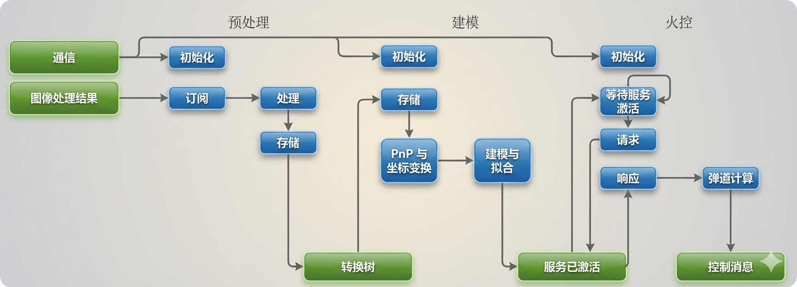

关于我
我是彭奕然，目前在哈尔滨工业大学（威海）自动化专业就读。
我过去两年的核心经历围绕 RoboMaster 机甲大师赛展开，曾担任 HERO 战队的视觉算法组组长。在技术上，我主要负责战队基于 ROS2 Humble 的上位机架构迭代，解决了以往系统耦合度高的问题。
我的算法工作侧重于动态目标检测与运动建模，利用 Ceres Solver 进行非线性拟合，并应用扩展卡尔曼滤波 (EKF) 实现对目标的位姿解算与追踪预测。
在实际成果与团队统筹方面：
• 实战表现：自瞄与能量机关实战命中率约 35% (1-3m)；能量机关（Buff）平均激活 30 环左右，7m 目标平均落点误差控制在 6cm。
• 工程规范：作为 718 实验室及视觉组负责人，我主导使用 Git/Gitee 进行代码版本控制，并利用语雀沉淀技术文档，协调 30+ 人规模的跨学科团队开发规范。
- 嵌入式开发（STM32、MicroPython）
- 视觉算法（OpenCV、PnP、滤波）
- 机器学习（TensorFlow、TFLite）
- ROS2 与 Linux 开发
项目
-
HERO战队 — 成员（2023年9月至今）
负责能量机关自动击打部分设计，自瞄相关部分协助开发调试。
自瞄流程图
预测与建模 (Prediction & Modeling)
预测与建模是我在视觉算法工作中的核心。以下为该部分的算法要点与技术细节，主要解决动态目标检测、运动估计与位姿追踪预测问题。
1. 机器人自瞄运动预测 (Robot Auto-Aim Prediction)
本环节主要解决在动态战场及敌方高频机动环境下，基于滤波估计与云台动力学，抵消系统延迟与子弹飞行时间，实现精准预测击打。
- 运动状态建模与 EKF 滤波：将目标状态构建为包含车辆中心三维位置与速度、装甲板偏航角及角速度、旋转半径的九维参数模型：
X = [xc, vxc, yc, vyc, zc, vzc, θ, ω, r]T。利用扩展卡尔曼滤波 (EKF) 进行非线性观测更新，实现了对复杂机动目标的稳健跟踪与中心位姿估计。 - 反陀螺策略与装甲板跳变检测：针对赛场常见的底盘高频旋转（“小陀螺”）策略，设计了专用的装甲板跳变处理逻辑。定义
Δθ = |θtracked - θanother|，借助多装甲板位置几何关联及测距逻辑，在偏航角突变时仍能维持状态收敛，有效实现反陀螺预测模式切换。 - 弹道补偿与提前量解算：在解算端引入特定的火控弹道补偿器，结合空气阻力与重力下坠模型对子弹飞行时间 (TOF) 进行迭代求解。基于相机与云台的高精度手眼标定与时间戳软硬同步，综合视觉捕获(
tv)、预测(tp)与发弹延迟(tf)推演目标未来位姿，最终下发高置信度开火指令。
2. 能量机关（Buff）运动学建模 (Energy Organ Modeling)
针对能量机关复杂的变速圆周运动，我设计了一套集几何拟合、函数参数辨识于一体的方案。
- 空间几何建模：
- 圆轨迹拟合：使用 Ceres Solver 进行非线性最小二乘拟合，累计 80 个采样点后进行首次圆心拟合。
- 数据清洗：引入异常数据筛选机制，根据标准距离值筛选 y 轴偏移过大的目标点，确保拟合圆心的稳定性。
- 变速规律拟合（针对大能量机关）：
- 目标函数：拟合速度函数
spd = a * sin(ω * t + ϕ) + 2.09 - a中的未知参数a,ω,ϕ。 - 数学推导技巧：为了降低角速度微分带来的噪声放大，采用了定积分方法推导角度函数，从而消除了积分常数 C，将问题转化为三参数的角度函数拟合。
- 优化策略：分为“初次拟合”与“校正拟合”，若预测角度与实际观测角度连续 5 帧误差超过阈值，则重新调用 Ceres 求解最优参数。
- 目标函数：拟合速度函数
- 滤波与补偿：
- 滑动窗口滤波：对原始角度数据进行滑动窗口平滑，减少因取图阻塞（5ms~400ms 波动）带来的时间戳噪声，误差控制在 1.5% 以内。
- 插值补偿：在数据缺失时，利用二次多项式插值或已拟合的角度函数进行预测值补全。
3. 弹道解算与击打逻辑 (Ballistic & Firing Logic)
- 迭代预测机制：通过二至三次迭代计算子弹飞行时间 (TOF)，不断缩小“预测位置计算出的飞行时间”与“实际物理飞行时间”的差距，从而获得精确的提前量。
- 自动发弹判定：设计了基于换叶状态、发弹间隔及云台对位状态的逻辑门控，防止云台未到位或频繁换叶导致的无效射击。
量化指标总结 (Key Metrics)
- 拟合精度：大能量机关参数拟合误差分别为：振幅
a(1.095%)、角速度ω(0.672%)、相位ϕ(1.592%)。 - 解算效率：圆拟合单次耗时约 1.08ms，角度函数拟合耗时约 4.6ms。
- 实战表现：自瞄命中率约 35%，能量机关平均激活 30 环，7m 落点误差控制在 6cm。
- 运动状态建模与 EKF 滤波：将目标状态构建为包含车辆中心三维位置与速度、装甲板偏航角及角速度、旋转半径的九维参数模型：